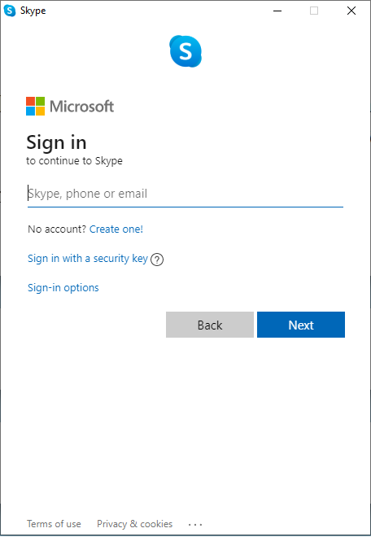
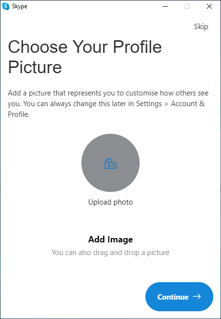
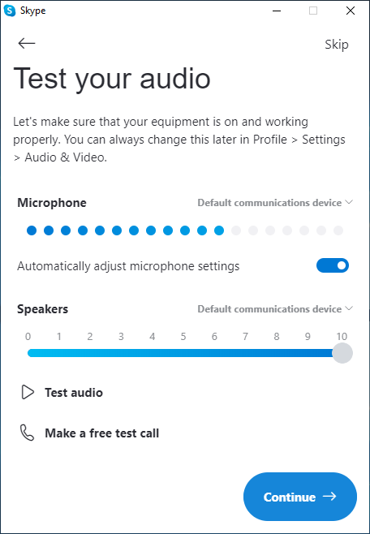
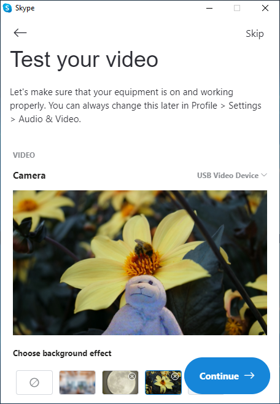

Basic Information
- Phone number or Email
- Create Password
- Inform your name
- Inform Country and DOB
- Receive a verification code
Profile Picture
Here you can upload your favorite picture to your profile.
If you prefer just tap or click in Continue.
Test the Audio
- Speak and observe
- Click on Test Audio
- Click Make a free test call
- Click in Continue
Test the Video
- Can you see yourself?
- Turn on/off background
- Upload a background image
- Click in Continue to finish